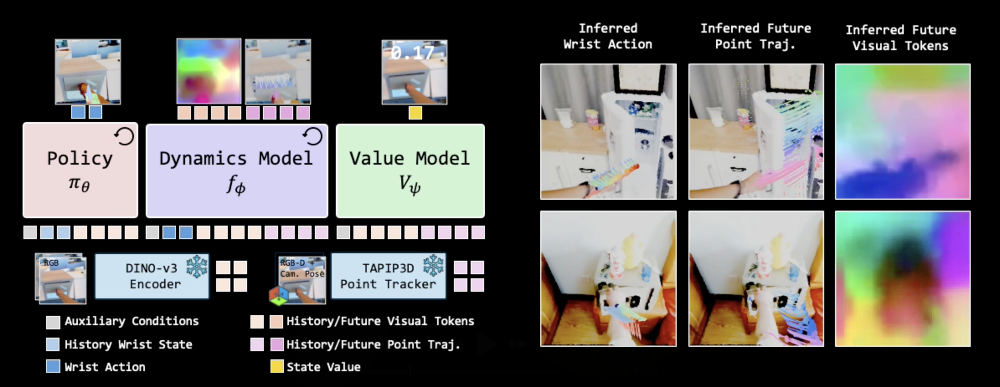
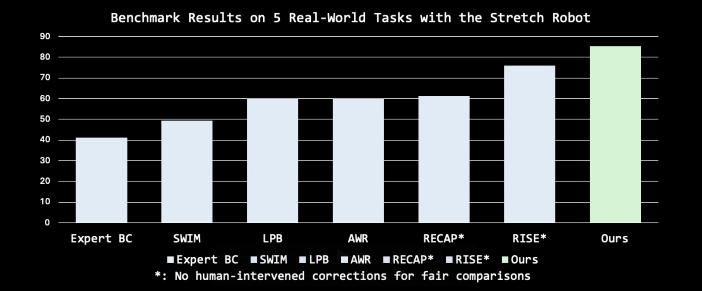
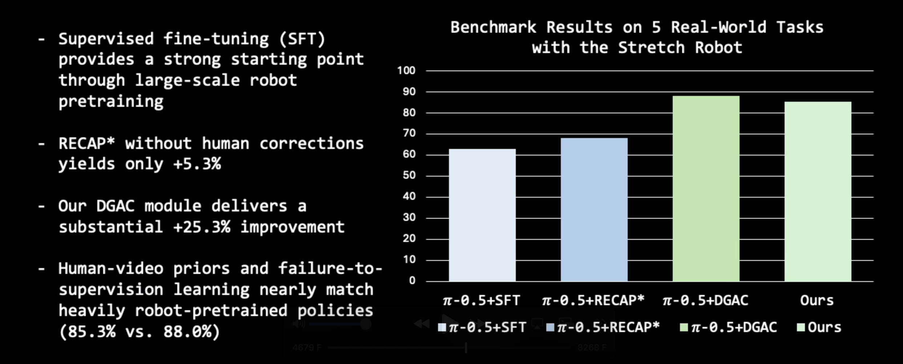

DGAC — X thread draft
DGAC
🤖🎥 We have recently seen some cool works that leverage human videos to learn robot policies, even without robot demonstrations (kudos to Humanego, Do-as-I-Do, etc.).
But what if human videos could do more than teach robots what to imitate?
We show that human videos can teach robots predictive representations of action, dynamics, and value. These embodiment-agnostic representations transfer across robot embodiments, enabling robots to self-improve from their own rollouts and failures - without online human intervention. Introducing:
📄 Robot Self-Improvement via Human-Video Dynamics Models
Our method enables two different robots to self-improve across 7 real-world manipulation tasks:
🚀 40% → 81% success rate
✅ zero human intervention during improvement
🌈 works across robot embodiments and different policy backbones
Human videos are not just data for imitation - they can support robot self-improvement.
📄 arXiv: link
🌐 Project page: link
🎥 Video: youtu.be/ZW3ZHjrllJA
🧵👇
41
312
1.8K
86K
DGAC
Step 1: pretrain shared policy, dynamics, and value models from human videos — representations that transfer across robot embodiments.
• Policy predicts 6-DoF wrist poses and hand closure variables
• Dynamics predicts the action-conditioned world state, represented by DINO-v3 visual tokens and point trajectories
• Value predicts task progress

DGAC
Step 2: human videos give useful priors, but robots still move differently and fail in their own ways.
So we let the robot collect its own interaction data: a VLM proposes atomic tasks (e.g., close the drawer), and the frozen human-pretrained policy tries them. These rollouts adapt the dynamics and value models to real robot successes and failures.
DGAC
Step 3: after robot-specific adaptation, we let the robot run on its own — no human intervention.
When the robot fails, our Dynamics-Guided Action Correction (DGAC) module retrieves progress-aligned successful experiences, generates and ranks corrective action chunks with learned dynamics and value models, and uses the best correction to relabel the failed transition — turning the robot’s own failures into supervision for policy improvement.

DGAC
Result: across 5 real-world manipulation tasks, our framework achieves the highest average success rate among 6 representative baselines.

DGAC
Self-improvement in action: before DGAC, failures occur and lead to unrecoverable task failures. After DGAC, the robot turns its own failed rollouts into supervision and recovers consistent task success.
DGAC
We further tested our framework with a Franka Panda robot, showing consistent improvement on a different embodiment.
DGAC
We also show that our approach is also policy-agnostic. Bolted onto π0.5, DGAC alone adds +25.3% success rate over SFT.
